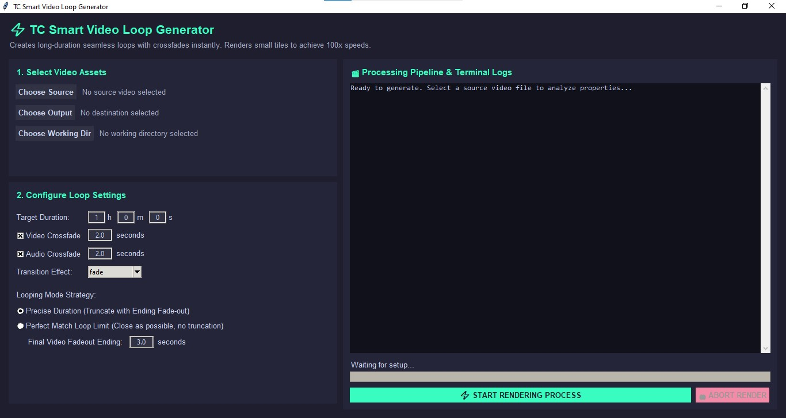

Transform short video clips into flawlessly seamless, ultra-long infinite loops in seconds! Built with Python and powered by selective FFmpeg re-encoding for 100x render speeds.

Check out this 6-hour relaxing music video generated using this app. See if you can spot the seamless loop boundary around 3:59!
💡 Smooth visual crossfade + zero audio click/pop at the transition tile.
If this tool saved you time or helped with your video projects, consider dropping a tip to keep development going!
Buy Me a Coffee ☕For supporters in Malaysia: Should you wish to support our initiative through a local funds transfer, the DuitNow QR code below is available for your convenience.
Thank you!